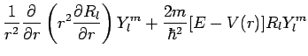

Inhalt Index DeskTop Bronstein

 Differentialgleichungen Partielle Differentialgleichungen Partielle Differentialgleichungen aus Naturwissenschaft und Technik Schrödinger-Gleichung
Differentialgleichungen Partielle Differentialgleichungen Partielle Differentialgleichungen aus Naturwissenschaft und Technik Schrödinger-Gleichung


Das betrachtete Teilchen wird durch ein radialsymmetrisches Potential V(r) gezwungen, sich ausschließlich auf Kugeloberflächenbahnen mit dem konstantem Radius zu bewegen. Dieses Modell reproduziert die Bewegung eines Elektrons unter der elektrostatischen Anziehung eines positiv geladenen Kerns. Da es sich um ein kugelsymmetrisches Problem handelt, ist die Benutzung von Kugelkoordinaten zweckmäßig (s. Abbildung).
Es gelten dann die Beziehungen
| (9.116a) |
wobei r der Radiusvektor ist,  der Winkel zwischen Radiusvektor und z-Achse (Polarwinkel) und
der Winkel zwischen Radiusvektor und z-Achse (Polarwinkel) und  der Winkel zwischen der Projektion des Radiusvektors auf die x,y-Ebene und der x-Achse (Azimutalwinkel). Für den LAPLACE-Operator ergibt sich
der Winkel zwischen der Projektion des Radiusvektors auf die x,y-Ebene und der x-Achse (Azimutalwinkel). Für den LAPLACE-Operator ergibt sich
| (9.116b) |
so daß die zeitunabhängige SCHRÖDINGER-Gleichung dieses raumfreien starren Rotators lautet:
Eine Lösung wird mit dem Ansatz
angestrebt, in dem Rl die nur vom Radius r abhängige radiale Wellenfunktion ist und eine nur von den beiden Winkeln abhängige Wellenfunktion. Einsetzen von (9.117a) in (9.116c) liefert
|  | |||
| (9.117b) |
Division durch RlYlm und Multiplikation mit r2 ergibt
Diese Gleichung (9.117c) kann nur erfüllt werden, wenn eine unabhängige Variation der Radiuskoordinate r auf der linken Seite der Gleichung und der Winkelkoordinaten auf der rechten dieselbe Separationskonstante ergeben, d.h., wenn die Seiten unabhängig voneinander sind und den gleichen konstanten Wert ergeben. Aus der partiellen Differentialgleichung ergeben sich dann eine gewöhnliche und eine partielle Differentialgleichung. Wird die Separationskonstante praktischerweise gleich l(l + 1) gesetzt, dann erhält man die nur von r und vom Potential V(r) abhängige sogenannte Radialgleichung:
Der winkelabhängige Anteil wird mit Hilfe des Ansatzes
ebenfalls separiert. Einsetzen von (9.117e) in (9.117c) liefert
| (9.117f) |
Bezeichnet man die Separationskonstante zweckmäßigerweise mit , dann lautet die sogenannte Polargleichung
und die Azimutalgleichung
| (9.117h) |
Beide Gleichungen sind potentialunabhängig, gelten also für jedes zentralsymmetrische Potential.
An die Lösung (9.117a) sind drei Forderungen zu stellen: Sie soll für  verschwinden, auf der Kugeloberfläche eindeutig sein und sich quadratisch integrieren lassen.
verschwinden, auf der Kugeloberfläche eindeutig sein und sich quadratisch integrieren lassen.
Die Radialgleichung (9.117d) enthält neben dem Potential V(r) noch die Separationskonstante  . Man schreibt deshalb R(r) = Rl(r) und substituiert
. Man schreibt deshalb R(r) = Rl(r) und substituiert
| (9.118a) |
weil das Quadrat der Funktion u(r) die letztlich gesuchte Aufenthaltswahrscheinlichkeit |u(r)|2dr = |Rl(r)|2r2dr des Teilchens in einer Kugelschale zwischen r und r + dr angibt. Die Substitution führt auf die eindimensionale SCHRÖDINGER-Gleichung
| (9.118b) |
Diese enthält das effektive Potential
| (9.118c) |
das aus zwei Anteilen besteht. Die Rotationsenergie
 |
(9.118d) |
wird Zentrifugalpotential genannt.
Die physikalische Bedeutung von l als Bahndrehimpuls-Quantenzahl ergibt sich aus der Analogiebetrachtung zur klassischen Rotationsenergie
| (9.118e) |
eines rotierenden Teilchens mit dem Trägheitsmoment  und dem Bahndrehimpuls :
und dem Bahndrehimpuls :
| (9.118f) |
Die Polargleichung (9.117g), die beide Separationskonstanten l(l + 1) und m2 enthält, ist eine LEGENDREsche Differentialgleichung. Ihre Lösung wird mit bezeichnet und kann durch einen Potenzreihenansatz ermittelt werden. Endliche, eindeutige und stetige Lösungen ergeben sich nur für . Daher gilt für l und m:
 |
(9.119a) |
Somit kann m insgesamt die (2l + 1) Werte
| (9.119b) |
durchlaufen.
Für ergeben sich die zugeordneten LEGENDREschen Polynome, die wie folgt definiert sind:
Als Spezialfall ()erhält man die LEGENDREschen Polynome 1. Art (9.57b) (s. auch Tabelle LEGENDREsche Polynome 1. Art). Die Normierung führt auf
| (9.119d) |
Da die Teilchenbewegung auf der Kugeloberfläche auch im Falle der physikalischen Auszeichnung einer Raumrichtung, z.B. durch ein Magnetfeld, unabhängig vom Azimutalwinkel ist, spezifiziert man die allgemeine Lösung durch die Festlegung
| (9.120a) |
für die unabhängig von  ist. Aus der Forderung nach Eindeutigkeit
ist. Aus der Forderung nach Eindeutigkeit
| (9.120b) |
folgt, daß m nur die Werte annehmen darf.
Aus der Normierung
| (9.120c) |
folgt
| (9.120d) |
Die Quantenzahl m wird magnetische Quantenzahl genannt.
In Übereinstimmung mit (9.117e) sind die Lösungen für die Polar- und die Azimutalgleichungen miteinander zu multiplizieren:
| (9.121a) |
Die Funktionen sind die sogenannten Kugelflächenfunktionen.
Wenn der Radiusvektor r am Koordinatenursprung gespiegelt wird , geht  in über und
in über und  in , so daß sich das Vorzeichen von Ylm ändern kann:
in , so daß sich das Vorzeichen von Ylm ändern kann:
 |
(9.121b) |
Daraus ergibt sich die Parität der betrachteten Wellenfunktion zu:
Die Eigenschaft Parität dient der Charakterisierung des Verhaltens der Wellenfunktion bei Rauminversion . Diese Operation wird mit dem Inversions- oder Paritätsoperator durchgeführt: . Bezeichnet man den Eigenwert des Operators mit  , dann muß eine zweimalige Anwendung von , d.h. auf führen, also auf die ursprüngliche Wellenfunktion. Daraus folgt:
, dann muß eine zweimalige Anwendung von , d.h. auf führen, also auf die ursprüngliche Wellenfunktion. Daraus folgt:
| (9.122b) |
Man spricht von gerader Wellenfunktion, wenn sie bei Rauminversion ihr Vorzeichen nicht ändert, von ungerader Wellenfunktion, wenn sie es ändert.
Die Parität setzt sich aus zwei Faktoren zusammen, der inneren Parität und der äußeren Parität. Letztere hängt vom Drehimpuls des beschriebenen Teilchens oder Systems gemäß (9.122a) ab.